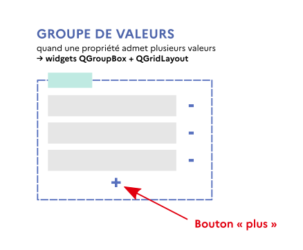
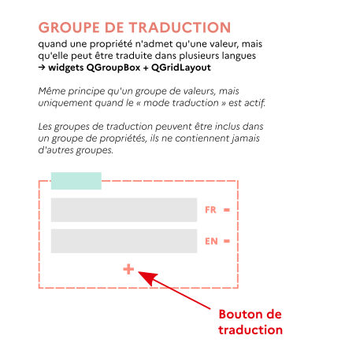
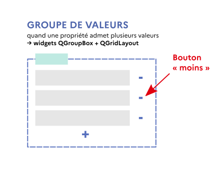
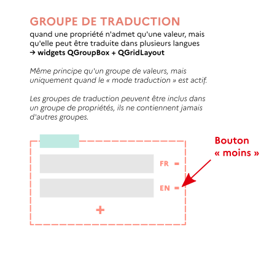
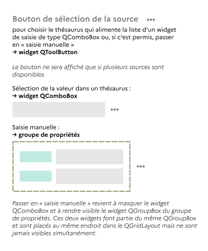
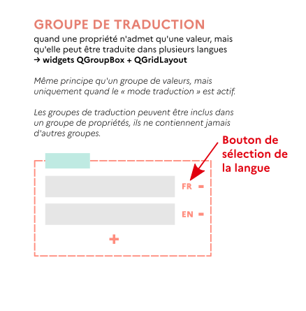

Actions contrôlées par les widgets du formulaire#
En plus d’être généré à la volée, le formulaire de saisie des métadonnées est dynamique. L’utilisateur peut déclencher des actions qui auront pour effet d’afficher ou masquer des widgets, d’en créer, d’en supprimer, de modifier des menus…
Toutes ces actions impliquent de mettre à jour le dictionnaire de widgets, grâce à des méthodes de la classe plume.rdf.widgetsdict.WidgetsDict. Ces méthodes renvoient à leur tour les informations nécessaires pour réaliser les opérations qui s’imposent sur les widgets eux-mêmes, sous la forme d’un dictionnaire contenant toujours les mêmes clés. Les valeurs de ces clés sont des listes qui seront vides ou non selon l’action réalisée. Elles sont décrites ci-après.
Structuration des dictionnaires contenant les informations de matérialisation • Boutons « plus » et boutons de traduction • Boutons « moins » • Boutons de sélection de la source • Boutons de sélection de la langue • Boutons de sélection de l’unité • Boutons de calcul
Pour les interactions de l’utilisateur avec la partie « fixe » de l’interface (sauvegarde, import, export, modification des paramètres utilisateur, etc.), on se reportera à Actions générales.
Structuration des dictionnaires contenant les informations de matérialisation#
Les dictionnaires renvoyés par les méthodes d’actions de la classe plume.rdf.widgetsdict.WidgetsDict présentent une structure fixe, indépendante de la méthode exécutée. Ainsi, il est possible (et certainement préférable) de prévoir des mécanismes de matérialisation eux-mêmes indépendants de la nature de l’action initialement effectuée par l’utilisateur.
Clé |
Valeur |
|---|---|
|
Liste de nouvelles clés du dictionnaire de widgets à matérialiser ( |
|
Liste de widgets ( |
|
Liste de widgets ( |
|
Liste de widgets ( |
|
Liste de grilles ( |
|
Liste d’actions ( |
|
Liste de menus ( |
|
Liste de clés du dictionnaire de widgets ( |
|
Liste de clés du dictionnaire de widgets ( |
|
Liste de clés du dictionnaire de widgets ( |
|
Liste de clés du dictionnaire ( |
|
Liste de tuples contenant les informations relatives à des widgets dont - parce qu’on a supprimé un widget antérieurement positionné au-dessus d’eux dans la grille - il faut à présent modifier la position. |
|
Liste de clés ( |
Chaque tuple de la clé 'widgets to move' est composé de six éléments :
[0]est la grille (QtWidgets.QGridLayout) contenant le widget ;[1]est le widget (QtWidgets.QWidget) à déplacer ;[2]est le nouveau numéro de ligne du widget dans la grille (paramètrerow) ;[3]est l’indice (inchangé) de la colonne (paramètrecolumn) ;[4]est le nombre (inchangé) de lignes occupées (paramètrerowSpan) ;[5]est le nombre (inchangé) de colonnes occupées (paramètrecolumnSpan).
Boutons « plus » et boutons de traduction#
Un bouton « plus » est un widget QToolButton qui, lorsqu’il est activé par l’utilisateur, permet d’ajouter une valeur dans un groupe de valeurs.

Un bouton de traduction est un QToolButton qui permet d’ajouter une traduction dans un groupe de traductions.

Ces deux types de boutons sont considérés ensemble, car le traitement à prévoir est le même (les méthodes utilisées n’auront pas exactement le même effet, mais c’est transparent).
Mise à jour du dictionnaire des widgets#
Lors de l’activation du bouton, il faudra commencer par mettre à jour le dictionnaire de widgets avec la méthode plume.rdf.widgetsdict.WidgetsDict.add :
r = widgetsdict.add(widgetkey)
Où widgetkey est la clé du bouton « plus » ou bouton de traduction considéré dans le dictionnaire de widgets widgetsdict.
… puis du formulaire#
Les informations renvoyées par add permettent de réaliser les opérations subséquentes sur les widgets.
Le dictionnaire résultant, ici r, pourra contenir des informations dans les clés suivantes :
'new keys'. Cette liste contient la ou les clés qui viennent d’être ajoutées au dictionnaire.'widgets to show'. Cette liste, si elle n’est pas vide, contiendra des widgetsQToolButtoncorrespondant à des boutons « moins ». En effet, lorsqu’il ne reste qu’un objet dans un groupe, son bouton « moins » disparaît pour empêcher sa suppression, il doit ensuite être ré-affiché si un nouvel objet est ajouté.'widgets to hide'. Cette liste sera toujours vide pour un bouton « plus ». Pour un bouton de traduction, elle pourra contenir leQToolButtondu bouton « plus » lui-même si toutes les langues disponibles pour les traductions sont maintenant utilisées, et qu’il n’y a donc plus lieu d’ajouter des traductions supplémentaires.'widgets to move'. Cette liste contient systématiquement et exclusivement le bouton plus ou bouton de traduction lui-même.'language menu to update'. Cette liste sera toujours vide pour le bouton « plus » d’un groupe de valeur. Dans un groupe de traduction, ajouter une traduction implique que la langue de celle-ci n’est plus disponible et doit donc être supprimée des menus des boutons de sélection de la langue qui accompagnent tous les widgets de saisie du groupe.
Boutons « moins »#
Les boutons « moins » existent à la fois dans les groupes de valeurs et dans les groupes de traduction. Dans les deux cas, ce sont des QToolButton dont l’activation permet à l’utilisateur de faire disparaître des zones de saisie excédentaires.
NB : une telle opération a pour seul intérêt le confort visuel de l’utilisateur et, lorsqu’il s’agit de retirer une branche complète et pas juste un widget de saisie, de lui éviter de devoir supprimer à la main un potentiellement grand nombre de valeurs. Quand il sera question de sauvegarder le contenu du formulaire, la présence de widgets vides n’aura aucune espèce d’importance.
 
Soit widgetkey la clé du bouton « moins » considéré dans le dictionnaire de widgets widgetsdict.
Mise à jour du dictionnaire des widgets#
Lors de l’activation du bouton, il faudra commencer par mettre à jour le dictionnaire de widgets avec la méthode plume.rdf.widgetsdict.WidgetsDict.drop :
r = widgetsdict.drop(widgetkey)
Où widgetkey est la clé du dictionnaire de widgets widgetsdict dont le bouton « moins » considéré est l’un des widgets annexes.
… puis du formulaire#
Les informations renvoyées par drop permettent de réaliser les opérations subséquentes sur les widgets.
Le dictionnaire résultant, ici r, pourra contenir des informations dans les clés suivantes :
'widgets to delete'. Cette liste contient les widgets que l’utilisateur a voulu faire disparaître. Ils ne sont dorénavant plus référencés dans le dictionnaire de widgets, ce qui fait qu’il ne sera plus jamais possible d’interagir avec eux. Les supprimer paraît la meilleure chose à faire.'grids to delete'. Le cas échéant, cette liste contient les grilles/QGridLayoutassociées aux widgets susmentionnés.'actions to delete'. Le cas échéant, cette liste contient lesQActionassociées aux widgets susmentionnés.'menus to delete'. Le cas échéant, cette liste contient lesQMenuassociées aux widgets susmentionnés.'widgets to show'. Cette liste sera toujours vide pour un bouton « moins » dans un groupe de valeur. Dans un groupe de traduction, elle pourra contenir leQToolButtondu bouton « plus » du groupe si retirer une traduction fait que toutes les langues ne sont désormais plus utilisées, et qu’il est donc de nouveau possible d’ajouter des traductions supplémentaires.'widgets to hide'. Cette liste, si elle n’est pas vide, contiendra des widgetsQToolButtoncorrespondant à des boutons « moins » qui doivent être masqués parce qu’il ne reste plus qu’un élément dans le groupe de valeurs ou de traduction (et qu’il n’est pas permis à l’utilisateur de supprimer le dernier élément d’un groupe).'language menu to update'. Cette liste sera toujours vide pour un bouton « moins » dans un groupe de valeur. Dans un groupe de traduction, supprimer une traduction implique que la langue de celle-ci (sous réserve qu’elle ait été autorisée au départ) est de nouveau disponible et doit donc être rajoutée aux menus des boutons de sélection de la langue qui accompagnent tous les widgets de saisie du groupe.'widgets to move'. Cette liste contient tous les widgets placés dans la même grille que l’objet supprimé et positionnés en dessous de celui-ci, incluant le bouton « plus », qu’il s’agit de remonter dans la grille pour occuper l’espace laissé libre.
Boutons de sélection de la source#
Le bouton de sélection de la source est un QToolButton qui accompagne un widget de saisie de type QComboBox ou un widget de groupe de propriétés.

Cf. Création d’un nouveau widget pour plus de détails sur les modalités de création de ces widgets.
Mise à jour du dictionnaire des widgets#
Quand l’utilisateur sélectionne une nouvelle source dans le menu, il faudra commencer par mettre à jour le dictionnaire de widgets avec la méthode plume.rdf.widgetsdict.WidgetsDict.change_source :
r = widgetsdict.change_source(widgetkey, new_source)
widgetkey est la clé du dictionnaire de widgets widgetsdict dont le bouton de sélection de la source considéré est l’un des widgets annexes. new_source est la nouvelle source choisie par l’utilisateur dans le menu associé au QToolButton.
… puis du formulaire#
Les informations renvoyées par change_source permettent de réaliser les opérations subséquentes sur les widgets.
Le résultat, ici r, pourra contenir des informations dans les clés suivantes :
'concepts list to update'. Cette liste, si elle n’est pas vide, contiendra soit la clé courante, soit celle dont on affichera les widgets à la place.'value to update'. Cette liste, si elle n’est pas vide, ne contiendra jamais que la clé de l’enregistrement courant.'switch source menu to update'. Cette liste, si elle n’est pas vide, contiendra soit la clé de l’enregistrement courant, soit celle dont on affichera les widgets à la place. Dans la grande majorité des cas, les items du menu ne changent pas, seulement la source identifiée comme sélectionnée (toujours fournie par la clé'current source'), mais on préférera régénérer intégralement tous les objetsQMenuetQActionpar précaution.'widgets to show'. Lors d’une bascule en « mode manuel », il faudra afficher le groupe de propriétés dans lequel se fera la saisie manuelle, ainsi que tous les widgets qu’il contient. En cas de sortie du mode manuel, il s’agira d’afficher le widget de saisieQComboBox(si thésaurus) ouQLineEdit(si saisie libre d’URI) que l’utilisateur devra désormais utiliser pour la catégorie de métadonnées concernée.'widgets to hide'. Lors d’une bascule en mode manuel ou sortie du mode manuel, les widgets utilisés pour l’ancien mode doivent être masqués.
Boutons de sélection de la langue#
Le bouton de sélection de la langue est un QToolButton qui accompagne un widget de saisie. Il a deux fonctions :
afficher la langue dans laquelle a été saisie la valeur (sous une forme abrégée - on écrira par exemple
'FR'pour une métadonnée en français) ;lors de l’édition des métadonnées, permettre à l’utilisateur de choisir dans un menu la langue de la valeur qu’il vient de saisir ou va saisir.

Cf. Création d’un nouveau widget pour plus de détails sur les modalités de création de ces widgets.
Mise à jour du dictionnaire des widgets#
Quand l’utilisateur sélectionne une nouvelle langue dans le menu, il faudra commencer par mettre à jour le dictionnaire de widgets avec la méthode plume.rdf.widgetsdict.WidgetsDict.change_language :
r = widgetsdict.change_language(widgetkey, new_language)
widgetkey est la clé du dictionnaire de widgets widgetsdict dont le bouton de sélection de la langue considéré est l’un des widgets annexes. new_language est la nouvelle langue choisie par l’utilisateur dans le menu associé au QToolButton.
… puis du formulaire#
Les informations renvoyées par change_language permettent de réaliser les opérations subséquentes sur les widgets.
Le résultat, ici r, pourra contenir des informations dans les clés suivantes :
'language menu to update'. Hors groupe de traduction, cette liste contient uniquement la clé pour laquelle l’utilisateur a changé la langue. Dans un groupe de traduction, cette liste contiendra les clés de tous les widgets de saisie du groupe. Pour la clé courante, la langue à afficher sur le bouton de sélection de la langue a été modifiée. Pour les autres clés, il s’agit d’enlever la langue nouvellement choisie et de rajouter celle qui l’était précédemment dans la liste des langues disponibles pour les traductions présentée par leQMenu.'widgets to hide'. Dans de rares cas, ce liste pourra contenir leQToolButtondu bouton « plus » du groupe de traduction (si la langue antérieurement sélectionnée n’était pas dans la liste des langues autorisées pour les traductions et que, après changement, toutes les langues autorisées sont désormais utilisées).
Boutons de sélection de l’unité#
Le bouton de sélection de l’unité est un QToolButton qui accompagne un widget de saisie. Lors de l’édition des métadonnées, il permet à l’utilisateur de déclarer l’unité dans laquelle est exprimée la valeur qu’il vient de saisir ou va saisir.
Cf. Création d’un nouveau widget pour plus de détails sur les modalités de création de ces widgets.
Mise à jour du dictionnaire des widgets#
Quand l’utilisateur sélectionne une nouvelle unité dans le menu, il faudra commencer par mettre à jour le dictionnaire de widgets avec la méthode plume.rdf.widgetsdict.WidgetsDict.change_unit :
r = widgetsdict.change_unit(widgetkey, new_unit)
widgetkey est la clé du dictionnaire de widgets widgetsdict dont le bouton de sélection de l’unité considéré est l’un des widgets annexes. new_unit est la nouvelle unité choisie par l’utilisateur dans le menu associé au QToolButton.
… puis du formulaire#
Les informations renvoyées par change_unit permettent de réaliser les opérations subséquentes sur les widgets.
Le résultat, ici r, contiendra uniquement des clés vides à l’exception de 'unit menu to update'. Celle-ci liste uniquement la clé courante, pour laquelle il faut changer l’unité affichée sur le bouton.
Boutons de calcul#
Cf. Création d’un nouveau widget pour plus de détails sur les modalités de création de ces widgets et Métadonnées calculées pour les actions à déclencher lorsque l’utilisateur clique sur le bouton.